РАСПРЕДВАЛ > УСТАНОВКА |
| 1. ПРОВЕРЬТЕ ЗУБЧАТОЕ КОЛЕСО РАСПРЕДВАЛА В СБОРЕ |
Зафиксируйте распредвал.
| 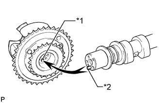 |
Поместите зубчатое колесо распредвала в сборе на распредвал, совместив отверстие под штифт и стопорный штифт.
| *1 | Отверстие для поршневого пальца |
| *2 | Стопорный штифт |
Слегка прижмите и поверните зубчатое колесо распредвала относительно распредвала и нажмите сильнее на колесо, когда штифт войдет в отверстие.
Убедитесь в отсутствии зазора между фланцем зубчатого колеса распредвала в сборе и распредвалом.
| 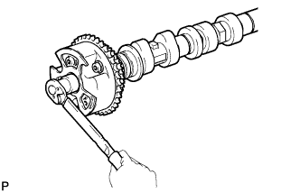 |
Удерживая распредвал, затяните болт крепления фланца.
Проверьте замок зубчатого колеса распредвала.
Зафиксируйте распредвал на месте и убедитесь, что зубчатое колесо распредвала заблокировано.
| 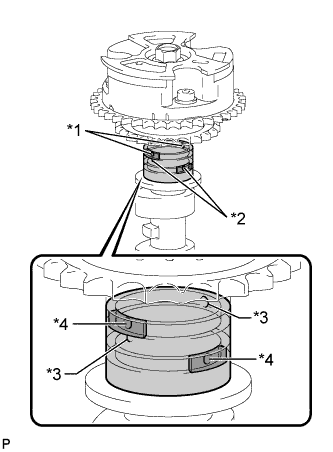 |
Извлеките стопорный штифт.
Закройте 4 масляных канала на шейке распредвала виниловой лентой, как показано на рисунке.
| *1 | Канал опережения |
| *2 | Канал запаздывания |
| *3 | Открыто |
| *4 | Закрыто |
 | Резина |
 | Виниловая лента |
Прорвите ленту со стороны канала опережения и со стороны канала запаздывания, который находится на обратной стороне отверстия со стороны канала опережения, как показано на рисунке.
| 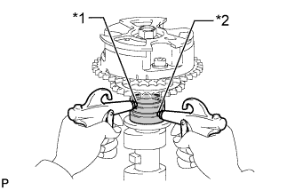 |
Подайте воздух под давлением приблизительно 200 кПа (2,0 кгс/см2, 28 фунтов на кв. дюйм) в 2 открытых канала.
| *1 | Канал опережения |
| *2 | Канал запаздывания |
| 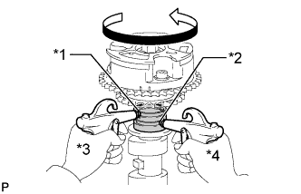 |
Убедитесь, что зубчатое колесо распредвала вращается в направлении угла опережения при снижении давления воздуха, подаваемого со стороны канала запаздывания.
| *1 | Канал опережения |
| *2 | Канал запаздывания |
| *3 | Поддержание давления |
| *4 | Уменьшение давления |
Когда зубчатое колесо распредвала займет положение, соответствующее максимальному углу опережения, сначала сбросьте давление воздуха в канале со стороны запаздывания, а затем в канале со стороны опережения.
Проверьте плавность вращения.
2-3 раза поверните зубчатое колесо распредвала в пределах угла его поворота (21°), но не доводите его до положения, соответствующего предельному углу запаздывания. Убедитесь, что зубчатое колесо вращается свободно.
Проверьте, фиксируется ли муфта в положении наибольшего запаздывания.
Убедитесь, что зубчатое колесо распредвала фиксируется в положении максимального запаздывания.
 |
Выверните болт фланца и снимите зубчатое колесо распредвала.
| *1 | Не снимайте |
| *2 | Стопорный штифт |
| *3 | Фланцевый болт |
| 2. ПРОВЕРЬТЕ ЗУБЧАТОЕ КОЛЕСО РАСПРЕДВАЛА ВЫПУСКНЫХ КЛАПАНОВ В СБОРЕ |
Зафиксируйте распредвал.
 |
Поместите зубчатое колесо распредвала выпускных клапанов в сборе на распредвал, совместив отверстие под штифт и стопорный штифт.
| *1 | Отверстие для поршневого пальца |
| *2 | Стопорный штифт |
Слегка прижмите и поверните зубчатое колесо распредвала относительно распредвала и нажмите сильнее на колесо, когда штифт войдет в отверстие.
Убедитесь в отсутствии зазора между фланцем зубчатого колеса и распредвалом.
| 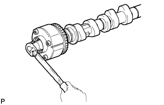 |
Удерживая распредвал, затяните болт крепления фланца.
Проверьте фиксацию зубчатого колеса распредвала выпускных клапанов.
Проверьте надежность фиксации зубчатого колеса распредвала выпускных клапанов.
 |
Извлеките стопорный штифт.
Закройте 4 масляных канала на шейке распредвала виниловой лентой, как показано на рисунке.
| *1 | Канал опережения |
| *2 | Канал запаздывания |
| *3 | Открыто |
| *4 | Закрыто |
| Резина |
| Виниловая лента |
Прорвите ленту со стороны канала опережения и со стороны канала запаздывания, который находится на обратной стороне отверстия со стороны канала опережения, как показано на рисунке.
 |
Подайте воздух под давлением приблизительно 200 кПа (2,0 кгс/см2, 28 фунтов на кв. дюйм) в 2 открытых канала (со стороны опережения и со стороны запаздывания).
| *1 | Канал опережения |
| *2 | Канал запаздывания |
 |
Убедитесь, что при снижении давления воздуха в канале со стороны опережения зубчатое колесо распредвала вращается в направлении угла запаздывания.
| *1 | Канал опережения |
| *2 | Канал запаздывания |
| *3 | Поддержание давления |
| *4 | Уменьшение давления |
Когда зубчатое колесо распредвала выпускных клапанов займет положение, соответствующее максимальному запаздыванию, сначала сбросьте давление воздуха в канале со стороны опережения, а затем в канале со стороны запаздывания.
Проверьте плавность вращения.
Два-три раза поверните зубчатое колесо распредвала выпускных клапанов в сборе в пределах его диапазона поворота (18,5°), но не доводите его до положения, соответствующего максимальному углу опережения. Убедитесь, что зубчатое колесо вращается свободно.
Проверьте фиксацию в положении наибольшего опережения.
Убедитесь, что зубчатое колесо распредвала выпускных клапанов зафиксировано в положении максимального опережения.
 |
Выверните болт фланца и снимите зубчатое колесо распредвала выпускных клапанов в сборе.
| *1 | Не снимайте |
| *2 | Стопорный штифт |
| *3 | Фланцевый болт |
| 3. УСТАНОВИТЕ ЗУБЧАТОЕ КОЛЕСО РАСПРЕДВАЛА В СБОРЕ |
Зафиксируйте распредвал.
Поместите зубчатое колесо распредвала в сборе на распредвал, совместив отверстие под штифт и стопорный штифт.
| *1 | Отверстие для поршневого пальца |
| *2 | Стопорный штифт |
Слегка прижмите и поверните зубчатое колесо распредвала относительно распредвала и нажмите сильнее на колесо, когда штифт войдет в отверстие.
Убедитесь в отсутствии зазора между фланцем зубчатого колеса распредвала в сборе и распредвалом.
Удерживая распредвал, вверните болт крепления фланца.
Проверьте замок зубчатого колеса распредвала.
Зафиксируйте распредвал на месте и убедитесь, что зубчатое колесо распредвала заблокировано.
| 4. УСТАНОВИТЕ ЗУБЧАТОЕ КОЛЕСО РАСПРЕДВАЛА ВЫПУСКНЫХ КЛАПАНОВ В СБОРЕ |
Зафиксируйте распредвал.
|
Поместите зубчатое колесо распредвала выпускных клапанов в сборе на распредвал, совместив отверстие под штифт и стопорный штифт.
| *1 | Отверстие для поршневого пальца |
| *2 | Стопорный штифт |
Слегка прижмите и поверните зубчатое колесо распредвала относительно распредвала и нажмите сильнее на колесо, когда штифт войдет в отверстие.
Убедитесь в отсутствии зазора между фланцем зубчатого колеса и распредвалом.
Удерживая распредвал, вверните болт крепления фланца.
Проверьте фиксацию зубчатого колеса распредвала выпускных клапанов.
Проверьте надежность фиксации зубчатого колеса распредвала выпускных клапанов.
| 5. УСТАНОВИТЕ РАСПРЕДВАЛ № 3 |
 |
Удостоверьтесь, что канавка совмещена с установочной меткой "0" на крышке цепного привода газораспределительного механизма.
Совместите пластину с меткой (желтую) с установочной меткой зубчатого колеса распредвала, как показано на рисунке, и установите цепь № 2 на зубчатое колесо распредвала.
| *1 | Установочная метка |
| *2 | Пластина с меткой (желтая) |
| *a | Совместите |
Очистите левый кожух распредвала и шейки распредвала и нанесите на них моторное масло.
 |
Проверьте, чтобы коромысло привода клапана № 1 было установлено, как показано на рисунке.
| *1 | Рычаг привода клапана |
| *2 | Механизм регулировки зазора в приводе клапана |
| *3 | Шток клапана |
| *4 | Колпак штока клапана |
Установите цепь на распредвал № 3, а затем установите распредвал в левый кожух распредвала.
| *a | Поместите на зубчатое колесо распредвала |
| 6. УСТАНОВИТЕ РАСПРЕДВАЛ № 4 |
Очистите левый кожух распредвала и шейки распредвала и нанесите на них моторное масло.
Проденьте распредвал № 4 через цепь № 2 с передней стороны автомобиля, совместите пластину с меткой (желтую) с установочной меткой и установите цепь № 2 на зубчатое колесо распредвала выпускных клапанов.
| *1 | Пластина с меткой (желтая) |
| *2 | Установочная метка |
 |
Поднимая распредвал № 4, проденьте натяжитель цепи № 3 в сборе через цепь № 2 и установите его на место.
Установите распредвал № 4 в левый кожух распредвала, а затем закрепите натяжитель цепи № 3 в сборе болтом.
| 7. УСТАНОВИТЕ КРЫШКУ ПОДШИПНИКА РАСПРЕДВАЛА (для ряда 2) |
Очистите крышки подшипников распредвала и нанесите на них моторное масло.
|
Проверьте, чтобы коромысло привода клапана № 1 было установлено, как показано на рисунке.
| *1 | Рычаг привода клапана |
| *2 | Механизм регулировки зазора в приводе клапана |
| *3 | Шток клапана |
| *4 | Колпак штока клапана |
Проверьте метки и номера на крышках подшипников распредвала, а затем снимите запасные болты и шайбы в порядке, показанном на рисунке. Сразу же после снятия болтов и шайб для временного крепления кожуха распредвала на месте крышки подшипника установите крышку подшипника, закрепив ее болтами в порядке, показанном на рисунке.
| *1 | Болт |
| *2 | Шайба |
| *a | Установка болтов и шайб для временного крепления кожуха распредвала |
| *b | Установка деталей |
 | Болт A |
 | болт B |
Снова проверьте момент затяжки всех болтов.
| 8. ПОДСОЕДИНИТЕ ЦЕПЬ В СБОРЕ (для ряда 2) |
Совместите нанесенные краской метки на зубчатом колесе распредвала и цепи № 1 и установите цепь № 1 на зубчатое колесо распредвала.
| *1 | Метка, нанесенная краской |
| 9. УСТАНОВИТЕ РАСПРЕДВАЛ |
Поверните коленчатый вал по часовой стрелке до положения, указанного на рисунке, чтобы можно было легко установить цепь.
Совместите пластину с меткой (желтую) с установочной меткой зубчатого колеса распредвала, как показано на рисунке, и установите цепь № 2 на зубчатое колесо распредвала.
| *1 | Установочная метка |
| *2 | Пластина с меткой (желтая) |
| *a | Совместите |
Очистите правый кожух распредвала и шейки распредвала и нанесите на них моторное масло.
|
Проверьте, чтобы коромысло привода клапана № 1 было установлено, как показано на рисунке.
| *1 | Рычаг привода клапана |
| *2 | Механизм регулировки зазора в приводе клапана |
| *3 | Шток клапана |
| *4 | Колпак штока клапана |
Установите цепь на распредвал, а затем установите распредвал в правый кожух распредвала.
| *a | Поместите на зубчатое колесо распредвала |
| 10. УСТАНОВИТЕ РАСПРЕДВАЛ № 2 |
Очистите правый кожух распредвала и шейки распредвала и нанесите на них моторное масло.
Проденьте распредвал № 2 через цепь № 2 с передней стороны автомобиля, совместите пластину с меткой (желтую) с установочной меткой и установите цепь № 2 на зубчатое колесо распредвала выпускных клапанов.
| *1 | Пластина с меткой (желтая) |
| *2 | Установочная метка |
 |
Приподняв распредвал № 2, пропустите натяжитель цепи № 2 в сборе через цепь № 2 и закрепите его на месте.
Установите распредвал № 2 в правый кожух распредвала, а затем закрепите натяжитель цепи № 2 в сборе болтом.
| 11. УСТАНОВИТЕ КРЫШКУ ПОДШИПНИКА РАСПРЕДВАЛА (для ряда 1) |
Очистите крышки подшипников распредвала и нанесите на них моторное масло.
|
Проверьте, чтобы коромысло привода клапана № 1 было установлено, как показано на рисунке.
| *1 | Рычаг привода клапана |
| *2 | Механизм регулировки зазора в приводе клапана |
| *3 | Шток клапана |
| *4 | Колпак штока клапана |
Проверьте метки и номера на крышках подшипников распредвала, а затем снимите запасные болты и шайбы в порядке, показанном на рисунке. Сразу же после снятия болтов и шайб для временного крепления кожуха распредвала на месте крышки подшипника установите крышку подшипника, закрепив ее болтами в порядке, показанном на рисунке.
| *1 | Болт |
| *2 | Шайба |
| *a | Установка болтов и шайб для временного крепления кожуха распредвала |
| *b | Установка деталей |
| болт A |
| болт B |
Снова проверьте момент затяжки всех болтов.
| 12. ПОДСОЕДИНИТЕ ЦЕПЬ В СБОРЕ (для ряда 1) |
Совместите нанесенные краской метки на зубчатом колесе распредвала и цепи № 1 и установите цепь № 1 на зубчатое колесо распредвала.
| *1 | Метка, нанесенная краской |
| 13. УСТАНОВИТЕ НАТЯЖИТЕЛЬ ЦЕПИ № 1 В СБОРЕ |
Поверните коленчатый вал на 30° против часовой стрелки от установочной метки "0", а затем поверните его по часовой стрелке, чтобы совместить канавку с установочной меткой "0".
Слегка поверните коленчатый вал, чтобы убрать слабину цепи.
 |
Повернув стопорную пластину натяжителя по часовой стрелке, нажмите на плунжер натяжителя цепи, как показано на рисунке.
| *1 | Стопорная пластина |
| *a | Нажмите |
Повернув стопорную пластину натяжителя против часовой стрелки, вставьте в отверстия стопорной пластины и натяжителя штифт диаметром 1,27 мм (0,0500 дюйма), чтобы зафиксировать стопорную пластину.
Установите натяжитель цепи и закрепите его 2 болтами.
Извлеките штифт из натяжителя цепи № 1.
| 14. ПРОВЕРЬТЕ ФАЗЫ ГАЗОРАСПРЕДЕЛЕНИЯ |
Проверьте установочные метки распредвала.
Убедитесь, что все установочные метки распредвала расположены, как показано на рисунке.

| *1 | Установочная метка | - | - |
| *a | Точка обзора | - | - |
 |
Если фазы газораспределения смещены, установите цепной привод газораспределительного механизма заново.
Поверните коленчатый вал на 2 оборота, установите цилиндр № 1 в ВМТ такта сжатия и снова проверьте установочные метки.
| 15. УСТАНОВИТЕ ПЛАСТИНУ КРЫШКИ ЦЕПНОГО ПРИВОДА ГАЗОРАСПРЕДЕЛИТЕЛЬНОГО МЕХАНИЗМА |
Установите новую прокладку и пластину крышки цепного привода газораспределительного механизма и закрепите их 4 болтами.
| 16. ЗАЛЕЙТЕ МОТОРНОЕ МАСЛО |
 |
| 17. УСТАНОВИТЕ КРЫШКУ ГОЛОВКИ БЛОКА ЦИЛИНДРОВ В СБОРЕ |
Удалите остатки старого герметика (FIPG). Следите, чтобы масло не попало на сопрягающиеся поверхности крышки цепного привода газораспределительного механизма, головки блока цилиндров и крышки головки блока цилиндров.
 |
Нанесите герметик, как показано на рисунке.
| Герметик |
Установите 3 новые прокладки.
Установите на крышку головки блока цилиндров новую прокладку.
Установите на болты уплотнительные шайбы.
 |
Временно закрепите крышку головки блока цилиндров 12 болтами. Равномерно затяните болты в несколько приемов.
| Параметр / Устройство | Длина |
| А | 25 мм (0,984 дюйма) |
| B | 35 мм (1,38 дюйма) |
| C | 65 мм (2,56 дюйма) |
| D | 60 мм (2,36 дюйма) |
| болт A |
| болт B |
 | болт C |
 | Болт D |
| 18. УСТАНОВИТЕ ЛЕВУЮ КРЫШКУ ГОЛОВКИ БЛОКА ЦИЛИНДРОВ В СБОРЕ |
Удалите остатки старого герметика (FIPG). Следите, чтобы масло не попало на сопрягающиеся поверхности крышки цепного привода газораспределительного механизма, головки блока цилиндров и крышки головки блока цилиндров.
| 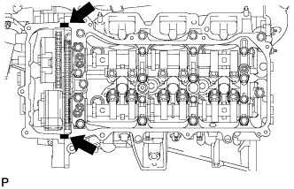 |
Нанесите герметик, как показано на рисунке.
| Герметик |
Установите 3 новые прокладки.
Установите на крышку головки блока цилиндров новую прокладку.
Установите на болты уплотнительные шайбы.
 |
Временно закрепите крышку головки блока цилиндров 12 болтами. Равномерно затяните болты в несколько приемов.
| Параметр / Устройство | Длина |
| А | 25 мм (0,984 дюйма) |
| B | 35 мм (1,38 дюйма) |
| C | 70 мм (2,76 дюйма) |
| D | 60 мм (2,36 дюйма) |
| болт A |
| болт B |
| болт C |
| Болт D |
| 19. ПОДСОЕДИНИТЕ ТОПЛИВОПРОВОД |
Подсоедините топливопровод и закрепите его 2 болтами.
| 20. УСТАНОВИТЕ ЗАДНЮЮ КРЫШКУ ГОЛОВКИ БЛОКА ЦИЛИНДРОВ |
Временно установите крышку и закрепите ее 3 болтами.
 |
Затяните 3 болта в порядке, указанном на рисунке.
| 21. УСТАНОВИТЕ МАСЛОПРОВОД № 2 |
Убедитесь в отсутствии посторонних частиц на сетке правого фильтра гидравлического клапана изменения фаз.
Установите новую прокладку, временно установите маслопровод (со стороны головки цилиндров) и вверните болт обратного масляного клапана.
Установите правый фильтр гидравлического клапана изменения фаз на штуцер маслопровода. Установите новые прокладки и временно установите маслопровод (со стороны крышки головки).
Затяните штуцер маслопровода (со стороны головки блока цилиндров).
Затяните штуцер маслопровода (со стороны крышки головки цилиндров).
| 22. УСТАНОВИТЕ МАСЛОПРОВОД № 1 |
Убедитесь в отсутствии посторонних частиц на сетке левого фильтра гидравлического клапана изменения фаз.
Установите новую прокладку, временно установите маслопровод (со стороны головки цилиндров) и вверните болт обратного масляного клапана.
Установите левый фильтр гидравлического клапана изменения фаз на штуцер маслопровода. Установите новые прокладки и временно установите маслопровод (со стороны крышки головки).
Затяните штуцер маслопровода (со стороны головки блока цилиндров).
Затяните штуцер маслопровода (со стороны крышки головки цилиндров).
| 23. УСТАНОВИТЕ ПЕРЕПУСКНОЙ ПАТРУБОК ОХЛАЖДАЮЩЕЙ ЖИДКОСТИ В СБОРЕ (для моделей с масляным радиатором) |
 |
Установите перепускной патрубок охлаждающей жидкости и закрепите его 3 болтами.
Подсоедините 2 шланга.
| *a | Вверх |
| *b | Назад |
| 24. УСТАНОВИТЕ ТРУБКУ ЩУПА ПРОВЕРКИ УРОВНЯ МАСЛА |
| 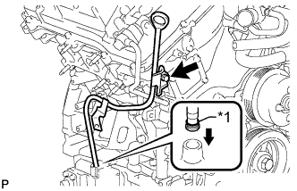 |
Установите новое кольцевое уплотнение в держатель щупа проверки уровня масла.
| *1 | Новое кольцевое уплотнение |
Нанесите на уплотнительное кольцо тонкий слой моторного масла.
Вставьте конец направляющей щупа проверки уровня масла в отверстие для направляющей.
Закрепите трубку щупа проверки уровня масла болтом.
Установите щуп проверки уровня масла.
| 25. УСТАНОВИТЕ ГЕНЕРАТОР В СБОРЕ |
Установите кронштейн генератора на генератор и закрепите болтом.
Установите генератор и закрепите его 2 болтами.
Закрепите кронштейн генератора болтом.
Закрепите зажим жгута проводов.
Установите жгут проводов и закрепите его 2 болтами.
Подсоедините разъем генератора к генератору.
Подсоедините провод генератора и зафиксируйте соединение гайкой.
Закройте заглушку контакта.
| 26. УСТАНОВИТЕ ТЕПЛОЗАЩИТНЫЙ ЭКРАН ВЫПУСКНОГО КОЛЛЕКТОРА № 2 |
Установите теплозащитный экран и закрепите его 3 болтами.
| 27. УСТАНОВИТЕ КРОНШТЕЙН ЗАЖИМА ЖГУТА ПРОВОДОВ |
Установите кронштейн зажима жгута проводов и закрепите его болтом.
Закрепите зажим.
| 28. УСТАНОВИТЕ ОПОРНЫЙ РОЛИК № 2 |
Интегрированного типа:
Закрепите опорный ролик № 2 болтом.
Для раздельного типа:
Установите крышку опорного ролика № 2, опорный ролик № 2 и крышку опорного ролика, и закрепите их болтом.
| 29. УСТАНОВИТЕ ЛОПАСТНОЙ НАСОС В СБОРЕ |
Закрепите лопастной насос 2 болтами.
Установите 2 зажима жгута проводов.
Подсоедините 2 разъема.
| 30. УСТАНОВИТЕ КАТУШКУ ЗАЖИГАНИЯ В СБОРЕ |
Установите 6 катушки зажигания и закрепите их 6 болтами.
Подсоедините разъемы 6 катушек зажигания.
| 31. УСТАНОВИТЕ КОМПЛЕКТ КЛАПАНА СИСТЕМЫ СНИЖЕНИЯ ТОКСИЧНОСТИ ОТРАБОТАВШИХ ГАЗОВ № 2 (для моделей со вспомогательной системой подачи воздуха в нейтрализатор) |
Установите комплект клапана системы снижения токсичности отработанных газов № 2 и закрепите его 3 гайками.
| 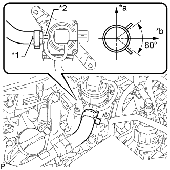 |
Совместите нанесенную краской метку с выступом и подсоедините воздушный шланг № 1.
| *1 | Метка, нанесенная краской |
| *2 | Ребро |
| *a | Верх |
| *b | С левой стороны |
Подсоедините разъем комплекта клапана системы снижения токсичности отработавших газов № 2.
| 32. УСТАНОВИТЕ КОМПЛЕКТ КЛАПАНА СИСТЕМЫ СНИЖЕНИЯ ТОКСИЧНОСТИ ОТРАБОТАВШИХ ГАЗОВ (для моделей со вспомогательной системой подачи воздуха в нейтрализатор) |
Установите комплект клапана системы снижения токсичности отработанных газов № 2 и закрепите его 3 гайками.
Совместите нанесенную краской метку с выступом и подсоедините воздушный шланг № 1.
| *1 | Метка, нанесенная краской |
| *2 | Ребро |
| *a | Верх |
| *b | С левой стороны |
Подсоедините разъем комплекта клапана системы снижения токсичности отработавших газов № 2.
| 33. УСТАНОВИТЕ ВОЗДУШНЫЙ ПАТРУБОК № 2 (для моделей со вспомогательной системой подачи воздуха в нейтрализатор) |
 |
Установите 2 новых прокладки на воздушный патрубок № 2.
| *1 | Новая прокладка |
| *2 | Воздушный патрубок № 2 |
Установите воздушный патрубок № 2 и закрепите его 2 болтами и 2 гайками.
| 34. УСТАНОВИТЕ ВОЗДУШНЫЙ ПАТРУБОК (для моделей со вспомогательной системой подачи воздуха в нейтрализатор) |
| 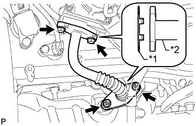 |
Установите 2 новых прокладки на воздушный патрубок.
| *1 | Новая прокладка |
| *2 | Воздушная трубка |
Установите воздушный патрубок и закрепите его 2 болтами и 2 гайками.
| 35. УСТАНОВИТЕ РАСШИРИТЕЛЬНЫЙ БАЧОК НА ВПУСКЕ ВОЗДУХА |
Установите новую прокладку в расширительный бачок на впуске воздуха.
| 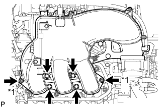 |
Установите расширительный бачок на впуске воздуха и закрепите его 4 болтами и 2 гайками в порядке, показанном на рисунке.
| *1 | Гайка |
Установите опору расширительного бачка № 1 и закрепите ее 2 болтами.
Закрепите зажим жгута проводов.
Установите опору расширительного бачка № 2 и закрепите ее 2 болтами.
Установите корпус дроссельной заслонки и закрепите его 2 болтами.
 |
Подсоедините шланг вентиляции картера № 1.
Подсоедините разъем электровакуумного клапана № 1.
Подсоедините шланг подачи топлива № 1.
| *a | Передняя сторона |
| *b | Метка |
| *c | Верх |
| 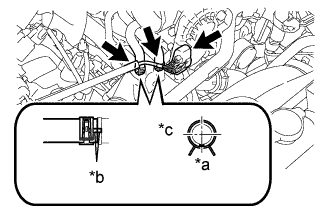 |
Подсоедините разъем корпуса дроссельной заслонки.
Подсоедините перепускной шланг охлаждающей жидкости № 4.
Подсоедините перепускной шланг охлаждающей жидкости № 5.
Подсоедините 2 хомута шланга отопителя.
| *a | Передняя сторона |
| *b | Метка |
| *c | Правая сторона |
| 36. УСТАНОВИТЕ ВОЗДУШНЫЙ ПАТРУБОК В СБОРЕ (для моделей со вспомогательной системой подачи воздуха в нейтрализатор) |
 |
для ряда 1:
Совместите нанесенные краской метки с выступом и подсоедините воздушный патрубок к комплекту клапана системы снижения токсичности отработавших газов.
| *1 | Ребро |
| *2 | Метка, нанесенная краской |
| *a | Правая сторона |
| *b | Верх |
 |
для стороны ряда 2:
Совместите нанесенные краской метки с выступом и подсоедините воздушный патрубок к комплекту клапана системы снижения токсичности отработавших газов № 2.
| *1 | Метка, нанесенная краской |
| *2 | Ребро |
| *a | Верх |
| *b | Левая сторона |
Заверните 3 болта.
| 37. УСТАНОВИТЕ КОЖУХ ВЕНТИЛЯТОРА |
Установите шкив вентилятора на насос системы охлаждения.
Поместите кожух вместе с вентилятором вискомуфты между радиатором и двигателем.
| 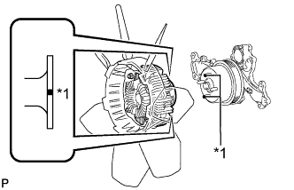 |
Совместите нанесенные краской метки на головках шпилек насоса системы охлаждения с нанесенными краской метками такого же цвета на наружной кромке фланца вискомуфты и установите вискомуфту на насос системы охлаждения.
| *1 | Метка, нанесенная краской |
Установите вентилятор вискомуфты на насос системы охлаждения и предварительно закрепите его 4 гайками. Затяните гайки вручную до упора.
 |
Присоедините захваты кожуха к радиатору, как показано на рисунке.
Закрепите кожух 2 болтами.
Установите поликлиновой ремень вентилятора и генератора (Нажмите здесь).
Затяните 4 гайки вентилятора вискомуфты.
| 38. ПОДСОЕДИНИТЕ ТРУБКУ МАСЛЯНОГО РАДИАТОРА (для моделей с масляным радиатором трансмиссии с воздушным охлаждением) |
 |
Подсоедините патрубок масляного радиатора с помощью 2 болтов и введите в зацепление захват, чтобы закрыть зажим гибкого шланга.
| 39. ПОДСОЕДИНИТЕ ТРУБКУ МАСЛЯНОГО РАДИАТОРА (для моделей с подогревателем) |
 |
Подсоедините патрубок масляного радиатора с помощью 2 болтов и введите в зацепление захват, чтобы закрыть зажим гибкого шланга.
| 40. УСТАНОВИТЕ РАСШИРИТЕЛЬНЫЙ БАЧОК РАДИАТОРА |
Установите расширительный бачок радиатора и закрепите его 3 болтами.
Подсоедините шланг расширительного бачка к верхней стороне верхнего бачка радиатора.
| 41. УСТАНОВИТЕ ПАТРУБОК РАДИАТОРА № 2 |
 |
Подсоедините шланг радиатора № 2 таким образом, чтобы нанесенная на него краской метка оказалась совмещенной с выступом на радиаторе, как показано на рисунке.
| *1 | Метка, нанесенная краской |
| *2 | Выступ |
| *a | Верх |
| 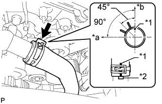 |
Подсоедините шланг радиатора № 2 таким образом, чтобы нанесенная на него краской метка оказалась совмещенной с выступом на приемнике охлаждающей жидкости, как показано на рисунке.
| *1 | Метка, нанесенная краской |
| *2 | Выступ |
| *a | Передняя сторона |
| *b | Верх |
| 42. УСТАНОВИТЕ ПАТРУБОК РАДИАТОРА № 1 |
| 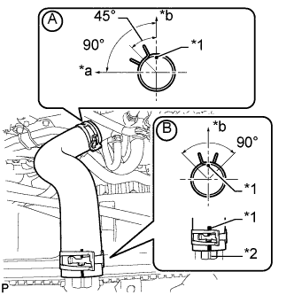 |
Подсоедините шланг радиатора № 1 к кожуху приемника охлаждающей жидкости, как показано на рисунке A.
| *1 | Метка, нанесенная краской |
| *2 | Выступ |
| *a | Передняя сторона |
| *b | Верх |
Подсоедините шланг радиатора № 1 таким образом, чтобы нанесенная на него краской метка оказалась совмещенной с выступом на радиаторе, как показано на рисунке B.
| 43. УСТАНОВИТЕ КОРПУС ВОЗДУШНОГО ФИЛЬТРА В СБОРЕ |
Установите корпус воздушного фильтра и закрепите его 3 болтами.
Закрепите зажим жгута проводов.
Установите фильтрующий элемент воздушного фильтра.
| 44. УСТАНОВИТЕ ШЛАНГ И КРЫШКУ ВОЗДУШНОГО ФИЛЬТРА |
 |
Установите крышку и шланг воздушного фильтра.
| *a | Верх |
| *b | Передняя сторона |
| *c | Справа |
| *d | Совместите вырез шланга с выступом на дроссельной заслонке |
| *e | Метка, нанесенная краской |
Установите крышку воздушного фильтра со шлангом и закрепите ее болтом и 4 откидными защелками.
Затяните хомут.
Введите в зацепление 4 зажима и подсоедините вентиляционный шланг, вакуумный шланг и разъем датчика массового расхода воздуха.
| 45. УСТАНОВИТЕ ЛОТОК АККУМУЛЯТОРНОЙ БАТАРЕИ |
| 46. УСТАНОВИТЕ АККУМУЛЯТОРНУЮ БАТАРЕЮ |
| 47. УСТАНОВИТЕ ПРИЖИМ АККУМУЛЯТОРНОЙ БАТАРЕИ |
Установите прижим аккумуляторной батареи и закрепите его 2 гайками.
| 48. ПОДСОЕДИНИТЕ ПРОВОД К ПОЛОЖИТЕЛЬНОМУ ВЫВОДУ АККУМУЛЯТОРНОЙ БАТАРЕИ |
| 49. ПОДСОЕДИНИТЕ ПРОВОД К ОТРИЦАТЕЛЬНОМУ ВЫВОДУ АККУМУЛЯТОРНОЙ БАТАРЕИ |
| 50. ДОБАВЬТЕ ОХЛАЖДАЮЩУЮ ЖИДКОСТЬ ДВИГАТЕЛЯ |
Затяните 2 пробки сливных кранов блока цилиндров.
Затяните пробку сливного крана радиатора вручную.
Долейте охлаждающую жидкость.
| Параметр / Устройство | Заданные условия | |
| Для моделей с автоматической трансмиссией | Для моделей без заднего подогревателя | 10,5 литра (11,1 кварты США, 9,2 английской кварты) |
| Для моделей с задним подогревателем | 12,3 литра (13,0 кварты США, 10,8 английской кварты) | |
| Для моделей с подогревателем | 12,8 литра (13,5 кварты США, 11,2 английской кварты) | |
| для моделей с механической трансмиссией | Для моделей без заднего подогревателя | 10,7 литра (11,3 кварты США, 9,4 английской кварты) |
| Для моделей с задним подогревателем | 12,5 литра (13,2 кварты США, 11,0 английской кварты) | |
Медленно налейте охлаждающую жидкость в расширительный бачок радиатора до отметки "F".
Установите пробку расширительного бачка.
Установите на место пробку радиатора.*1
Запустите двигатель и сразу же остановите его.*2
Подождите примерно 10 с. Затем снимите пробку радиатора и проверьте уровень охлаждающей жидкости. Если уровень охлаждающей жидкости снизился, добавьте охлаждающую жидкость.*3
Повторяйте шаги *1, *2 и *3 до тех пор, пока уровень охлаждающей жидкости не снизится.
Установите на место пробку радиатора.*4
Настройте систему кондиционирования, как описано ниже.*5
| Параметр / Устройство | Условие |
| Скорость вентилятора | Любая настройка, кроме OFF (ВЫКЛ) |
| Температура | В сторону "WARM" |
| Переключатель системы кондиционирования | Выкл |
Запустите двигатель, прогрейте его настолько, чтобы открылся термостат, а затем дайте поработать в таком состоянии несколько минут, чтобы прокачать охлаждающую жидкость.*6
Остановите двигатель и подождите, пока охлаждающая жидкость не охладиться до температуры окружающего воздуха. Затем снимите пробку радиатора и проверьте уровень охлаждающей жидкости.*7
Если уровень охлаждающей жидкости снизился, добавьте охлаждающую жидкость и прогрейте двигатель до открывания термостата.*8
Если уровень охлаждающей жидкости не снизился, убедитесь, что уровень жидкости в расширительном бачке радиаторе находится на линии F.
Если уровень охлаждающей жидкости ниже линии F, повторите шаги с *4 по *8.
Если уровень охлаждающей жидкости выше линии F, слейте охлаждающую жидкость до линии F.
| 51. ЗАЛЕЙТЕ МОТОРНОЕ МАСЛО |
Добавьте свежее масло.
| Класс масла по степени вязкости | Вязкость масла (SAE) |
| Универсальное моторное масло API сорт SL "Energy-Conserving", SM "Energy-Conserving" или ILSAC | 0W-20 5W-20 5W-30 10W-30 |
| Универсальное моторное масло API сорт SL или SM | 15W-40 20W-50 |
| Параметр / Устройство | Заданные условия |
| Слив и заполнение без замены масляного фильтра | 5,7 литра (6,0 кварты США, 5,0 английской кварты) |
| Слив и заполнение с заменой масляного фильтра | 6,1 л (6,4 кварты США, 5,4 английской кварты) |
| Заполнение сухой системы | 6,9 литра (7,3 кварты США, 6,1 английской кварты) |
| Параметр / Устройство | Заданные условия |
| Слив и заполнение без замены масляного фильтра | 5,7 литра (6,0 кварты США, 5,0 английской кварты) |
| Слив и заполнение с заменой масляного фильтра | 6,2 литра (6,6 кварты США, 5,5 английской кварты) |
| Заполнение сухой системы | 7,1 литра (7,5 кварты США, 6,2 английской кварты) |
| 52. ПРОВЕРЬТЕ, НЕТ ЛИ УТЕЧЕК ОХЛАЖДАЮЩЕЙ ЖИДКОСТИ |
Заполните радиатор охлаждающей жидкостью, а затем подсоедините приспособление для опрессовки системы охлаждения и проверки пробки радиатора.
Прогрейте двигатель.
С помощью приспособления для опрессовки системы охлаждения и проверки пробки радиатора увеличьте давление в радиаторе до 123 кПа (1,3 кгс/см2, 18 фунтов на кв. дюйм) и убедитесь, что давление не падает.
Если давление снижается, проверьте на наличие утечек шланги, радиатор и насос системы охлаждения. Если нет следов или признаков утечки внешней охлаждающей жидкости, проверьте сердцевину отопителя, блок цилиндров и головку блока цилиндров.
| 53. ПРОВЕРЬТЕ, НЕТ ЛИ УТЕЧЕК МОТОРНОГО МАСЛА |
Запустите двигатель. Убедитесь, что утечки масла отсутствуют в узлах, на которых выполнялись работы.
| 54. УСТАНОВИТЕ ДЕКОРАТИВНУЮ КРЫШКУ V-ОБРАЗНОГО ДВИГАТЕЛЯ |
 |
Совместите 2 крюка крышки V-образного двигателя с кронштейном. Затем совместите 2 уплотнительных шайбы декоративной крышки V-образного двигателя с 2 штифтами и нажмите на декоративную крышку V-образного двигателя, чтобы закрепить штифты.
| *1 | Штифт |
| *2 | Крюк |
| 55. УСТАНОВИТЕ ВЕРХНЕЕ УПЛОТНЕНИЕ КРОНШТЕЙНА РАДИАТОРА |
Установите верхнее уплотнение кронштейна радиатора и закрепите его 13 фиксаторами.
| 56. УСТАНОВИТЕ ЗАЩИТУ КАРТЕРА ДВИГАТЕЛЯ № 1 В СБОРЕ |
 |
Присоедините защиту картера двигателя к кузову автомобиля, как показано на рисунке.
Вверните 4 болта.
| 57. УСТАНОВИТЕ НИЖНЮЮ НАКЛАДКУ ПЕРЕДНЕГО БАМПЕРА |
Установите нижнюю облицовку переднего бампера и закрепите ее 5 болтами и фиксатором.
| 58. ПРОВЕРЬТЕ УГОЛ ОПЕРЕЖЕНИЯ ЗАЖИГАНИЯ |
Прогрейте двигатель.
Если используется портативный диагностический прибор:
Подсоедините портативный диагностический прибор к DLC3.
Войдите в следующие меню: Powertrain / Engine and ECT / Data List / All Data / IGN Advance.
Проверьте угол опережения зажигания на холостых оборотах.
Убедитесь в том, что угол опережения зажигания возрастает сразу после увеличения частоты вращения коленчатого вала двигателя.
 |
Если портативный диагностический прибор не используется:
С помощью SST соедините контакты 13 (TC) и 4 (CG) на DLC3.
| *a | Вид спереди разъема DLC3 |
Подсоедините щуп стробоскопа к проводу разъема катушки зажигания, идущему к цилиндру № 1.
 |
Проверьте угол опережения зажигания на холостых оборотах.
Отсоедините SST от DLC3.
Проверьте угол опережения зажигания на холостых оборотах.
Отсоедините стробоскоп от двигателя.